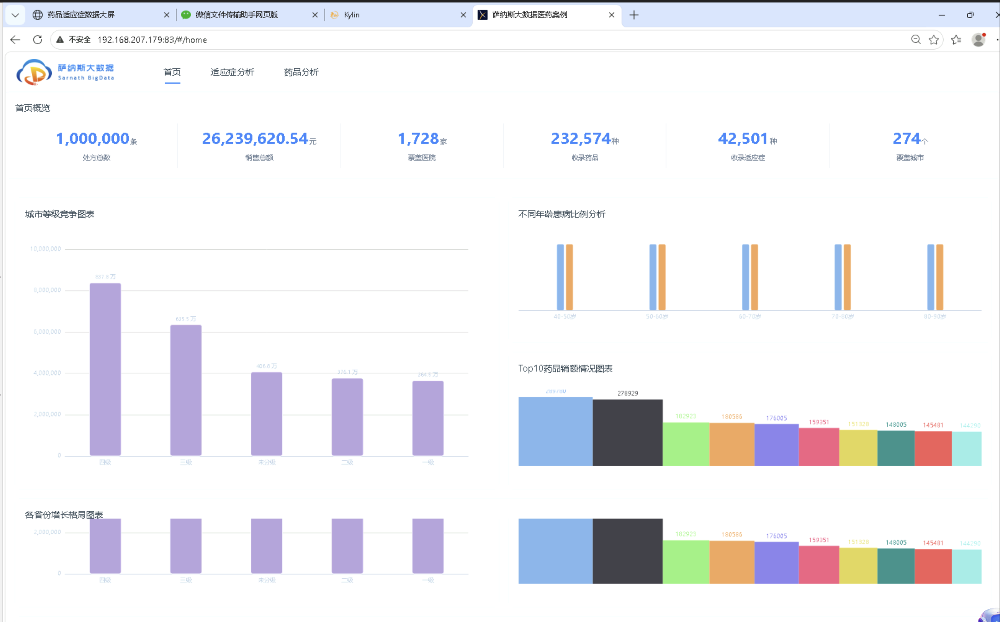
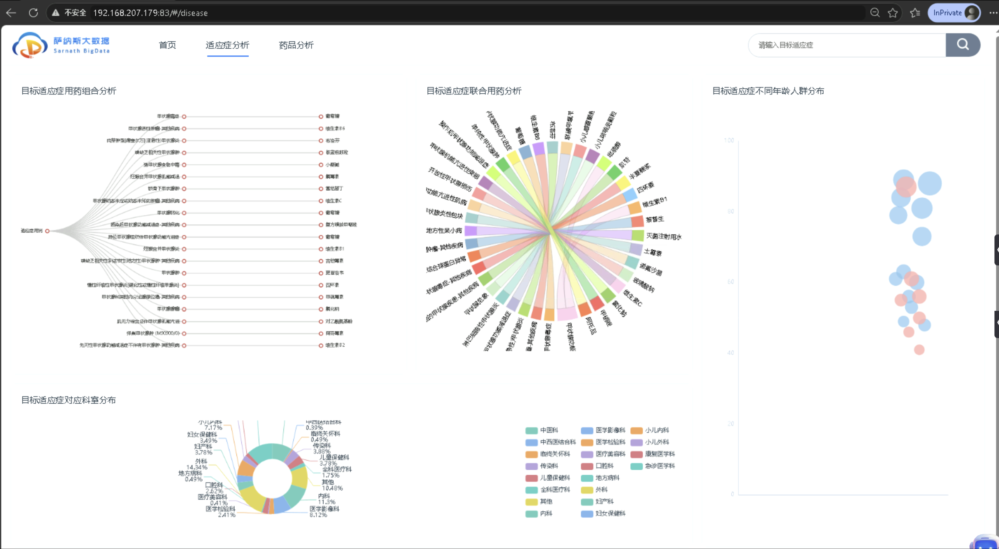
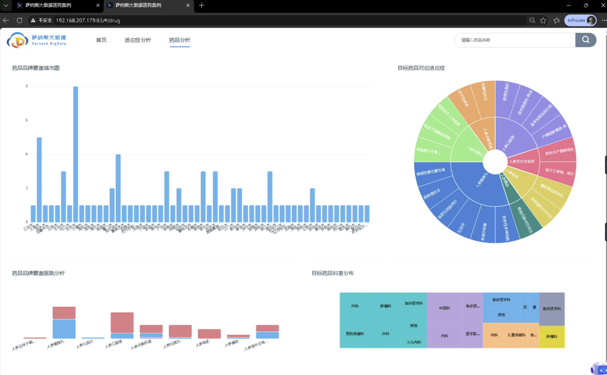
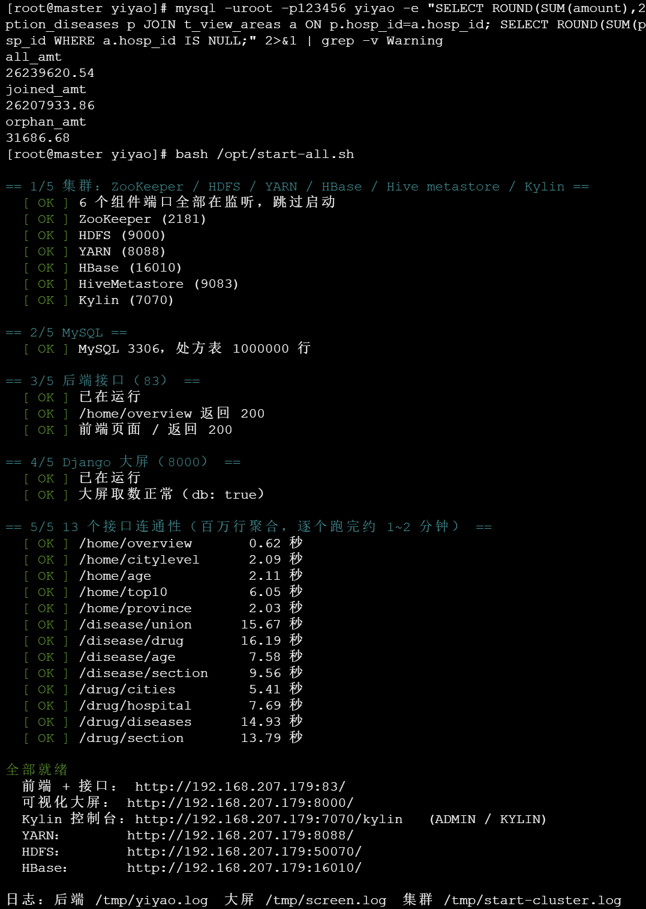
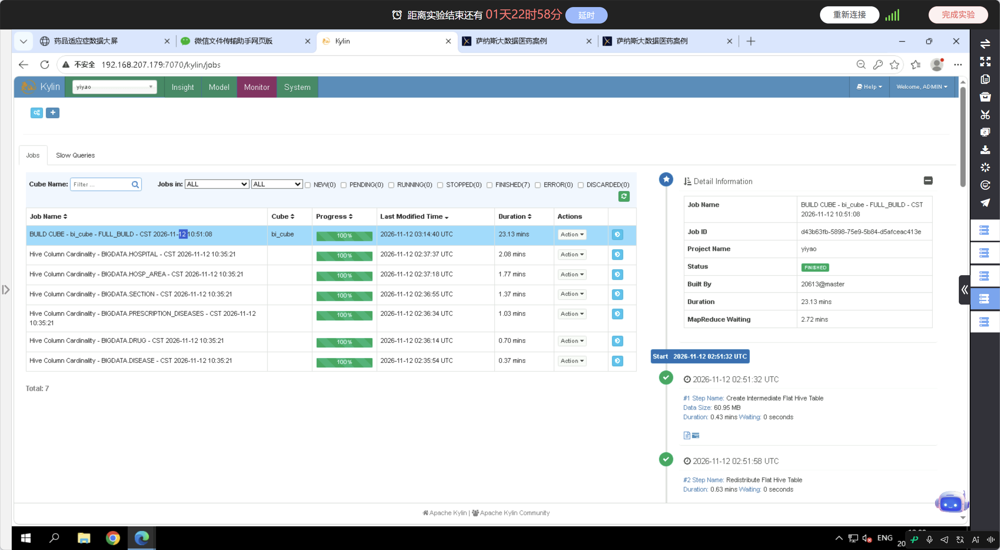
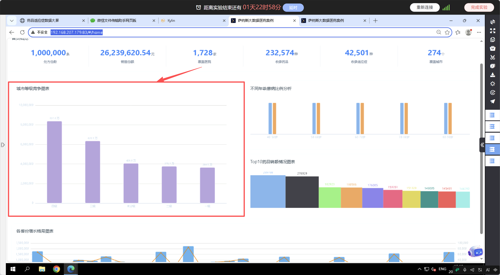
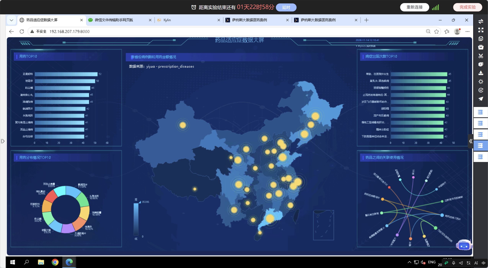

项目进展与成果
本项目以实训下发的 100 万条脱敏处方数据为数据源，围绕目标适应症与用药行为建立多维分析系统。系统由三个部分组成：13 个数据分析接口、13 个前端交互图表、1 张含 5 个子图的可视化大屏。
截至汇报时，集群环境、数据导入、立方体构建、接口开发、前端与大屏开发、部署与验证六个环节均已完成，系统处于可演示状态。全部 13 个接口返回数据库中真实数据，18 条测试用例执行完毕。
| 组成部分 | 数量 | 内容 |
|---|---|---|
| 数据接口 | 13 | 首页概览、城市等级、年龄比例、销售金额前十、省份分布、适应症与药品关联、药品关联关系、适应症年龄、适应症科室、城市用药、药品与医院等级、药品与适应症、药品与科室 |
| 前端图表 | 13 | 首页概览指标卡、城市等级竞争、年龄患病比例、销售金额前十、各省份格局、适应症药品关联、药品关系图、适应症年龄、适应症科室、城市用药分布、药品医院等级、药品适应症、药品科室分布 |
| 可视化大屏 | 5 | 省份地图、用药数量前十、用药金额前十占比、病症次数前十、药物关联关系 |
| 技术文档 | 6 | 需求规格说明书、可行性分析报告、数据基准值、部署与验收说明、数据集说明、环境架构说明 |
| 过程文档 | 2 | 功能测试用例、答辩提纲 |



环境由三台 CentOS 7 虚拟机构成，全部组件部署在 master 节点，对外提供服务地址为一个端口。前端产物打包进后端程序，与接口同源提供，避开了跨域配置。
| 节点 | 地址 | 承担进程 |
|---|---|---|
| master | 192.168.207.179 | NameNode、ResourceManager、HMaster、Hive Metastore、Kylin、MySQL、后端服务、可视化大屏 |
| slave1 | 192.168.203.160 | DataNode、NodeManager、HRegionServer、ZooKeeper |
| slave2 | 192.168.202.0 | DataNode、NodeManager、HRegionServer、ZooKeeper |
| 组件 | 版本 | 端口 | 组件 | 版本 | 端口 |
|---|---|---|---|---|---|
| Hadoop | 2.7.3 | 50070 | Kylin | 3.1.1 | 7070 |
| Hive | 1.2.1 | 9083 | 后端服务 | SpringBoot 2.5.1 | 83 |
| HBase | 1.2.1 | 16010 | 可视化大屏 | Django 3.2.25 | 8000 |
| ZooKeeper | 3.4.6 | 2181 | MySQL | 5.7.28 | 3306 |
集群涉及六个组件且存在启动顺序依赖，手工启停容易产生残留进程与端口占用。为此将启停流程收敛为一条命令，脚本自行判断缺失组件并补齐，完成后执行一次全量自检。

数据分为两条链路。第一条进入大数据链路，经 HDFS 与 Hive 外部表建立星型模型，再进入 Kylin 完成预计算。第二条进入 MySQL 明细库，承担业务查询，同时作为可视化大屏的数据来源。
| 项目 | 实测结果 |
|---|---|
| 维度 | 8 个，全部取自事实表：年龄、性别、年月、数据类型、支付方式、医生职称、科室、医院 |
| 度量 | 2 个，处方金额求和、处方单价求和 |
| 维度组合 | 256 个 cuboid |
| 构建耗时 | 23.13 分钟 |
| 输入数据 | 100 万行，中间表 60.95 MB |
| 立方体体积 | 2.95 GB，为源数据的 54 倍 |
| 状态 | READY |

13 个接口的查询需要在药品编码与诊断编码上建立关联。药品编码共 232,574 条，诊断编码共 42,501 条，二者属于高基数字段。立方体的 8 个维度不含这两列，原因在于维度数量与 cuboid 数量呈指数关系。
将 13 个接口实际用到的 20 个字段全部纳入模型，维度组合数量为 2 的 20 次方以上。以 2 的 8 次方耗时 23.13 分钟为基准外推，2 的 22 次方约 419 万个 cuboid，构建时间约 291 天。这一量级不具备可行性，与机器性能无关。
据此确定分工：低基数的单表聚合由 Kylin 承担，高基数的明细关联由 MySQL 承担。MySQL 侧建立了 9 个索引，其中药品编码通过生成列去除序号后缀后建立索引，使关联能够命中索引。接口层通过配置项切换查询引擎，业务代码保持不变。
13 个接口全部返回数据库中真实数据。耗时按查询类型呈现明显分层，单表聚合与多表关联分别处于两个区间。下表为一次完整运行的实测值，重复运行存在秒级波动。
| 接口 | 分析内容 | 耗时 |
|---|---|---|
| /home/overview | 首页概览指标 | 0.61 |
| /home/citylevel | 城市等级竞争 | 2.08 |
| /home/age | 年龄患病比例 | 2.16 |
| /home/top10 | 销售金额前十 | 5.97 |
| /home/province | 各省份销售格局 | 1.94 |
| /disease/union | 适应症与药品关联 | 15.65 |
| /disease/drug | 药品关联关系 | 15.74 |
| /disease/age | 适应症年龄分布 | 7.68 |
| /disease/section | 适应症科室分布 | 9.81 |
| /drug/cities | 城市用药分布 | 5.18 |
| /drug/hospital | 药品与医院等级 | 7.91 |
| /drug/diseases | 药品与适应症 | 15.44 |
| /drug/section | 药品与科室分布 | 13.37 |

数据集本身存在若干特征，直接影响图表的形态与指标之间的关系。这些特征已在文档中逐条记录，汇报时按口径说明。
| 项目 | 数值 | 说明 |
|---|---|---|
| 处方总数 | 1,000,000 | 全表计数，不含关联 |
| 分布图合计 | 998,836 | 1,164 行的医院编号在区域维表中缺少对应记录，被内连接过滤 |
| 销售总额 | 26,239,620.54 元 | 全表金额求和 |
| 分级金额合计 | 26,207,933.86 元 | 与销售总额相差 31,686.68 元，来自同一批缺失记录 |
| 时间覆盖 | 单一月份 200812 | 时间维度只有一个取值，分级图呈现为等级之间的对比 |
| 年龄分布 | 40 至 89 岁 | 共 50 个取值，每个取值 2 万行 |
| 性别比例 | 500,222 比 499,778 | 两个取值接近均分，各年龄段差异在 0.04 个百分点量级 |
| 维度规模 | 232,574 药品、42,501 适应症、1,728 医院、31 省份、267 城市 | 用于核对各维度图表的取值范围 |

测试用例共 18 条，覆盖 13 个接口与 5 张子图。接口类用例逐条记录返回状态、字段结构与实测耗时，大屏类用例校验取数来源字段，确认返回取自数据库而非内置演示数据。
| 类别 | 用例数 | 通过 | 判定依据 |
|---|---|---|---|
| 接口类 | 13 | 13 | 返回状态 200，字段与基准值一致，无数据时返回空数组 |
| 大屏类 | 5 | 5 | 取数来源字段为数据库，数值与基准值一致 |
| 合计 | 18 | 18 |
响应时间按查询类型判定：单表聚合不超过 2 秒，多表关联不超过 20 秒。该口径依据实测数据确定，并在需求文档与测试用例中保持一致。
| 问题 | 原因 | 处理 |
|---|---|---|
| 按资料步骤批量导入 HBase 反复失败 | HBase 1.2.1 自带的 Hadoop 客户端版本为 2.5.1，与集群 Hadoop 2.7.3 在作业提交环节不兼容 | 数据链路改为 HDFS 加 Hive 外部表，HBase 转为只承担立方体存储 |
| 服务器无法访问代码托管平台 | 域名解析被污染，连接在握手阶段超时 | 改用镜像下载，脚本加入重试与压缩包完整性校验 |
| 接口改查 MySQL 后出现语法错误与数值偏差 | 两侧列名与方言存在差异，年龄列与诊断列名称不同，类型转换函数不接受无长度的字符类型，年月字段为保留字 | 在查询网关中统一做七处映射，业务代码不做改动 |
| 页面图表出现演示数据 | 前端回退阈值设为 8 秒，慢查询被判定为失败 | 阈值调整为 60 秒，后端返回错误时不再以演示数据替代 |
| 名称 | 内容 |
|---|---|
| 需求规格说明书 | 13 个接口与 5 张大屏图的功能、返回字段、验收标准 |
| 可行性分析报告 | 技术、经济、操作三方面论证，含查询路径分工的量化依据 |
| 数据基准值 | 13 个接口的实测数值，验收时逐项核对 |
| 部署与验收说明 | 集群启动、数据库准备、后端与前端部署、验收清单、故障记录 |
| 数据集说明 | 数据来源、导入方式、数据本身的特征 |
| 功能测试用例 | 18 条用例及实测结果 |
| 运维脚本 | 一键启停与自检、只读状态检查、立方体信息查询、基准值抓取 |